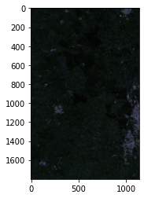
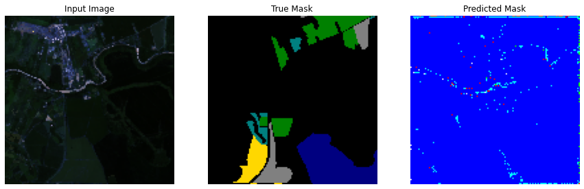
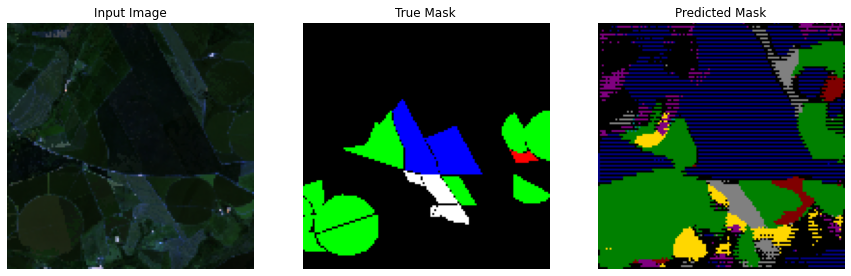
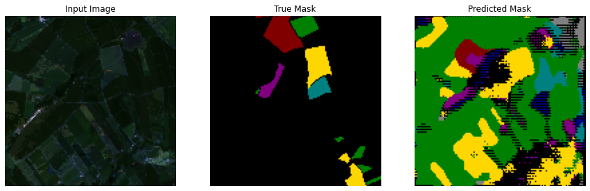
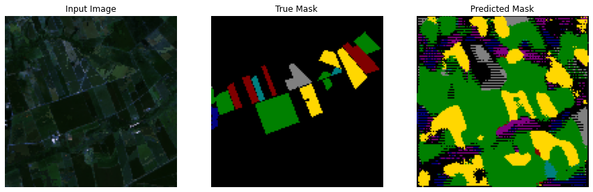
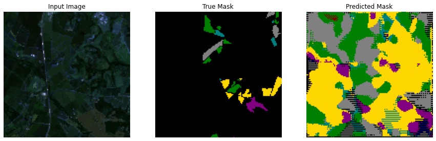
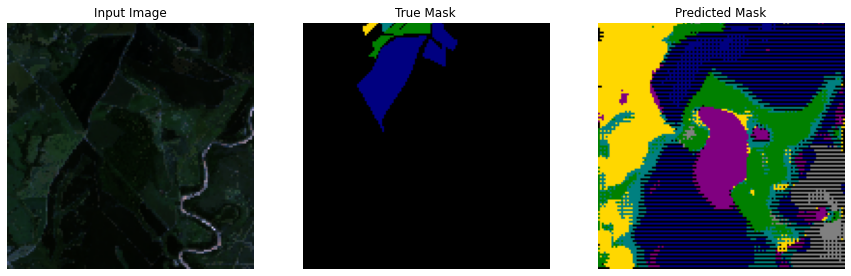
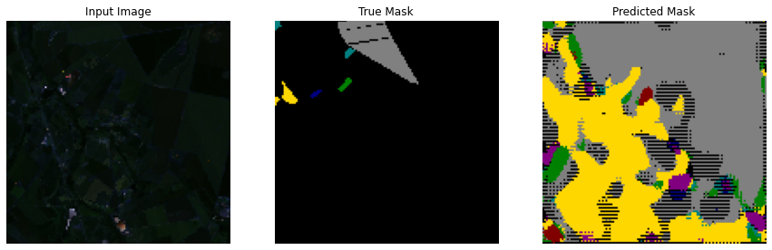
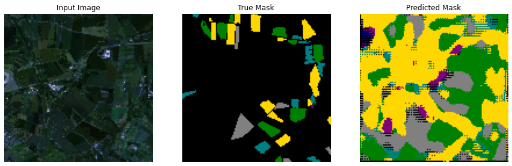
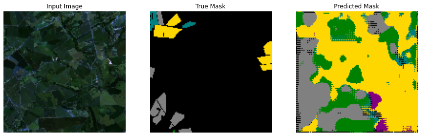

Agricultural Satellite Image Segmentation¶
Classifying each pixel of an agricultural satellite image
!gdown --id 1f31SgXXXXXXXXXXXX #60-band-image
!gdown --id 19EG9fXXXXXXXXXXXX #annotation
Libraries¶
import os
import csv
import random
import datetime
import numpy as np
from pathlib import Path
from pandas import DataFrame
from tqdm.notebook import tqdm
from PIL import Image
import seaborn as sns
import matplotlib
from matplotlib import gridspec
import matplotlib.pyplot as plt
from IPython.display import clear_output
from tabulate import tabulate
from sklearn.preprocessing import StandardScaler, MinMaxScaler
import tensorflow as tf
from tensorflow import keras
from tensorflow.keras import layers
from tensorflow.keras import losses
from tensorflow.keras import models
from tensorflow.keras.models import Model
from tensorflow.keras.layers import Input, Conv2D, MaxPooling2D, UpSampling2D
from tensorflow.keras.layers import concatenate, Conv2DTranspose, BatchNormalization, Dropout
from tensorflow.keras.optimizers import Adam
from tensorflow.keras.utils import plot_model
from tensorflow.keras.utils import to_categorical
from tensorflow.keras import backend as K
Parameters¶
filelist_trainx = ['data_60bands.npy']
filelist_trainy = ['labels.npy']
label_dict = {0:0, 1:1, 2:2, 3:3, 4:4, 6:5, 7:6, 8:7}
label_dict_x = {0:'Background',
1:'Crop 1',
2:'Crop 2',
3:'Crop 3',
4:'Crop 4',
5:'Crop 5',
6:'Crop 6',
7:'Crop 7'}
color_dict = {0: [0, 0, 0],
1: [255,215,0],
2: [0,128,0],
3: [0,0,128],
4: [128,0,128],
5: [0,128,128],
6: [128,0,0],
7: [128,128,128]}
weight_dict = {0: 0, 1: 12, 2: 10, 3: 15, 4: 24, 5: 28, 6: 30, 7: 10}
# weight_dict = {0: 1.0, 1: 124.71, 2: 97.24, 3: 154.72, 4: 244.87, 5: 286.02, 6: 296.12, 7: 100.67}
CLASS_WEIGHTS = list(weight_dict.values())
TEST_RATIO = 0.2
THRESHOLD = .95
N_BANDS = 60
N_CLASSES = 8
N_FILTERS = 32
N_EPOCHS = 50
PATCH_SZ = 128
BATCH_SIZE = 16
smooth = 1e-12
Utils¶
def train_test_split(data, test_ratio=0.2):
train_size = int((1 - test_ratio) * data.shape[1])
if len(data.shape)==3:
train = data[:, :train_size, :]
test = data[:, train_size:, :]
else:
train = data[:, :train_size]
test = data[:, train_size:]
return train, test
def maskohe(mask):
return to_categorical(mask, num_classes=N_CLASSES)
def maskrgb(mask, ohe=False):
if ohe:
mask = np.argmax(mask, axis=-1)
color = np.array(list(color_dict.values()))
mask = color[mask.ravel()].reshape(mask.shape+(3,)).astype('uint8')
mask = mask/255
return mask
def display(display_list):
plt.figure(figsize=(15, 15))
title = ['Input Image', 'True Mask', 'Predicted Mask']
for i in range(len(display_list)):
plt.subplot(1, len(display_list), i+1)
plt.title(title[i])
plt.imshow(tf.keras.preprocessing.image.array_to_img(display_list[i]))
plt.axis('off')
plt.show()
def create_mask(pred_mask):
pred_mask = tf.argmax(pred_mask, axis=-1)
pred_mask = pred_mask[0,:,:].numpy()
pred_mask = maskrgb(pred_mask)
return pred_mask
def vis_segmentation(image, seg_map, figsize=4):
"""Converts one-hot mask into 2d-label array"""
seg_map = np.argmax(seg_map, axis=-1) if seg_map.ndim==3 else seg_map
"""Visualizes input image, segmentation map and overlay view."""
plt.figure(figsize=(figsize*3, figsize))
grid_spec = gridspec.GridSpec(1, 4, width_ratios=[6, 6, 6, 1])
plt.subplot(grid_spec[0])
plt.imshow(image)
plt.axis('off')
plt.title('input image')
plt.subplot(grid_spec[1])
seg_image = maskrgb(seg_map)
plt.imshow(seg_image)
plt.axis('off')
plt.title('segmentation map')
plt.subplot(grid_spec[2])
plt.imshow(image)
plt.imshow(seg_image, alpha=0.2)
plt.axis('off')
plt.title('segmentation overlay')
unique_labels = np.unique(seg_map)
ax = plt.subplot(grid_spec[3])
plt.imshow(maskrgb(unique_labels.reshape(-1,1)), interpolation='nearest')
ax.yaxis.tick_right()
plt.yticks(range(len(unique_labels)), [label_dict_x[x] for x in unique_labels])
plt.xticks([], [])
ax.tick_params(width=0.0)
plt.grid('off')
plt.show()
data_raw = np.load(filelist_trainx[0])
mask_raw = np.load(filelist_trainy[0])
# data handle
data = np.moveaxis(data_raw, 0, -1)
scalers = {}
for i in range(data.shape[-1]):
scalers[i] = StandardScaler()
data[:, :, i] = scalers[i].fit_transform(data[:,:,i].ravel().reshape(-1,1)).reshape(data.shape[0], data.shape[1])
scalers = {}
for i in range(data.shape[-1]):
scalers[i] = MinMaxScaler()
data[:, :, i] = scalers[i].fit_transform(data[:,:,i].ravel().reshape(-1,1)).reshape(data.shape[0], data.shape[1])
plt.imshow(data[:,:,:3]); plt.show()

# mask handle
mask = np.vectorize(label_dict.get)(mask_raw)
unique, counts = np.unique(mask, return_counts=True)
print(tabulate([counts], headers=[label_dict_x[x] for x in unique]))
mask_rgb = maskrgb(mask)
mask_ohe = maskohe(mask)
plt.imshow(mask_rgb); plt.show()
Background Crop 1 Crop 2 Crop 3 Crop 4 Crop 5 Crop 6 Crop 7
------------ -------- -------- -------- -------- -------- -------- --------
1.9538e+06 15667 20093 12628 7979 6831 6598 19407
Visualize¶
H_MARK = 1400
W_MARK = 600
SIZE = 200
SEASON = 4
x = H_MARK; y = W_MARK; z = SIZE; s = (SEASON-1)*5
vis_segmentation(data[x:x+z,y:y+z,s:s+3], mask[x:x+z,y:y+z], 5)

Generate samples¶
N_PATCHES = 3000
PATCH_SZ = 128
THRESHOLD = 95
def get_rand_patch(img, mask, sz=160):
"""
:param img: ndarray with shape (x_sz, y_sz, num_channels)
:param mask: binary ndarray with shape (x_sz, y_sz, num_classes)
:param sz: size of random patch
:return: patch with shape (sz, sz, num_channels)
"""
assert len(img.shape) == 3 and img.shape[0] > sz and img.shape[1] > sz and img.shape[0:2] == mask.shape[0:2]
xc = random.randint(0, img.shape[0] - sz)
yc = random.randint(0, img.shape[1] - sz)
patch_img = img[xc:(xc + sz), yc:(yc + sz)]
patch_mask = mask[xc:(xc + sz), yc:(yc + sz)]
# Apply some random transformations
random_transformation = np.random.randint(1,8)
if random_transformation == 1: # reverse first dimension
patch_img = patch_img[::-1,:,:]
patch_mask = patch_mask[::-1,:,:]
elif random_transformation == 2: # reverse second dimension
patch_img = patch_img[:,::-1,:]
patch_mask = patch_mask[:,::-1,:]
elif random_transformation == 3: # transpose(interchange) first and second dimensions
patch_img = patch_img.transpose([1,0,2])
patch_mask = patch_mask.transpose([1,0,2])
elif random_transformation == 4:
patch_img = np.rot90(patch_img, 1)
patch_mask = np.rot90(patch_mask, 1)
elif random_transformation == 5:
patch_img = np.rot90(patch_img, 2)
patch_mask = np.rot90(patch_mask, 2)
elif random_transformation == 6:
patch_img = np.rot90(patch_img, 3)
patch_mask = np.rot90(patch_mask, 3)
else:
pass
return patch_img, patch_mask
def get_patches(img, mask, n_patches, path='.', sz=160):
img_path = Path(os.path.join(path,'images'))
img_path.mkdir(parents=True, exist_ok=True)
mask_path = Path(os.path.join(path,'masks'))
mask_path.mkdir(parents=True, exist_ok=True)
idx = 0
pbar = tqdm(total=n_patches)
while idx < n_patches:
img_patch, mask_patch = get_rand_patch(img, maskohe(mask), sz)
_ , count = np.unique(np.argmax(mask_patch, axis=-1), return_counts=True)
if(max(count) < (sz*sz*THRESHOLD/100)):
np.save(img_path / f"image_{idx}.npy", np.array(img_patch))
np.save(mask_path / f"mask_{idx}.npy", np.array(mask_patch))
idx += 1
pbar.update(1)
pbar.close()
get_patches(data, mask, N_PATCHES, '/content/data/', PATCH_SZ)
# Image_id = 50
# Image_size = 7
# sample_image = np.load(f'/content/data/images/image_{Image_id}.npy')
# sample_mask = np.load(f'/content/data/masks/mask_{Image_id}.npy')
# vis_segmentation(sample_image[:,:,:3], sample_mask, Image_size)

Data loader¶
class AgriCrops(tf.keras.utils.Sequence):
"""Helper to iterate over the data (as Numpy arrays)."""
def __init__(self, batch_size, img_size, img_channels, input_img_paths, target_img_paths):
self.batch_size = batch_size
self.img_size = img_size
self.img_channels = img_channels
self.input_img_paths = input_img_paths
self.target_img_paths = target_img_paths
def __len__(self):
return len(self.target_img_paths) // self.batch_size
def __getitem__(self, idx):
"""Returns tuple (input, target) correspond to batch #idx."""
i = idx * self.batch_size
batch_input_img_paths = self.input_img_paths[i : i + self.batch_size]
batch_target_img_paths = self.target_img_paths[i : i + self.batch_size]
x = np.zeros((self.batch_size,) + self.img_size + (self.img_channels,), dtype="float32")
for j, path in enumerate(batch_input_img_paths):
img = np.load(path)
x[j] = img
y = np.zeros((self.batch_size,) + self.img_size + (8,), dtype="uint8")
for j, path in enumerate(batch_target_img_paths):
img = np.load(path)
y[j] = img
return x, y
# Data paths
input_dir = '/content/data/images'
target_dir = '/content/data/masks'
input_img_paths = sorted([os.path.join(input_dir, fname) for fname in os.listdir(input_dir)])
target_img_paths = sorted([os.path.join(target_dir, fname) for fname in os.listdir(target_dir)])
# Shuffling
val_samples = 500
SEED = 40
random.Random(SEED).shuffle(input_img_paths)
random.Random(SEED).shuffle(target_img_paths)
# Split our img paths into a training and a validation set
train_input_img_dir = input_img_paths[:-val_samples]
train_target_img_dir = target_img_paths[:-val_samples]
test_input_img_dir = input_img_paths[-val_samples:]
test_target_img_dir = target_img_paths[-val_samples:]
# Instantiate data Sequences for each split
train_gen = AgriCrops(BATCH_SIZE, (PATCH_SZ,PATCH_SZ), N_BANDS,
train_input_img_dir, train_target_img_dir)
val_gen = AgriCrops(BATCH_SIZE, (PATCH_SZ,PATCH_SZ), N_BANDS,
test_input_img_dir, test_target_img_dir)
x, y = val_gen.__getitem__(np.random.randint(0,10))
print(x.shape, y.shape)
image_id = np.random.randint(0,BATCH_SIZE)
sample_image, sample_mask = x[image_id,:,:,:], y[image_id,:,:,:]
# display([sample_image[:,:,:3], maskrgb(sample_mask, ohe=True)])
vis_segmentation(sample_image[:,:,:3], sample_mask, 7)
(16, 128, 128, 60) (16, 128, 128, 8)
def show_predictions(dataset=train_gen, num=1):
x, y = dataset.__getitem__(0)
for i in range(num):
display([x[i,:,:,:3], maskrgb(y[i,...], ohe=True), create_mask(model.predict(x[i:i+1, ...]))])
class DisplayCallback(tf.keras.callbacks.Callback):
def on_epoch_end(self, epoch, logs=None):
clear_output(wait=True)
show_predictions(train_gen, num=3)
show_predictions(val_gen, num=2)
print ('\nSample Prediction after epoch {}\n'.format(epoch+1))
Model architecture¶
def model1(n_classes=5, im_sz=160, n_channels=8, n_filters_start=32, growth_factor=2, upconv=True,
class_weights=[0.2, 0.3, 0.1, 0.1, 0.3]):
droprate=0.25
n_filters = n_filters_start
inputs = Input((im_sz, im_sz, n_channels))
#inputs = BatchNormalization()(inputs)
conv1 = Conv2D(n_filters, (3, 3), activation='relu', padding='same')(inputs)
conv1 = Conv2D(n_filters, (3, 3), activation='relu', padding='same')(conv1)
pool1 = MaxPooling2D(pool_size=(2, 2))(conv1)
#pool1 = Dropout(droprate)(pool1)
n_filters *= growth_factor
pool1 = BatchNormalization()(pool1)
conv2 = Conv2D(n_filters, (3, 3), activation='relu', padding='same')(pool1)
conv2 = Conv2D(n_filters, (3, 3), activation='relu', padding='same')(conv2)
pool2 = MaxPooling2D(pool_size=(2, 2))(conv2)
pool2 = Dropout(droprate)(pool2)
n_filters *= growth_factor
pool2 = BatchNormalization()(pool2)
conv3 = Conv2D(n_filters, (3, 3), activation='relu', padding='same')(pool2)
conv3 = Conv2D(n_filters, (3, 3), activation='relu', padding='same')(conv3)
pool3 = MaxPooling2D(pool_size=(2, 2))(conv3)
pool3 = Dropout(droprate)(pool3)
n_filters *= growth_factor
pool3 = BatchNormalization()(pool3)
conv4_0 = Conv2D(n_filters, (3, 3), activation='relu', padding='same')(pool3)
conv4_0 = Conv2D(n_filters, (3, 3), activation='relu', padding='same')(conv4_0)
pool4_1 = MaxPooling2D(pool_size=(2, 2))(conv4_0)
pool4_1 = Dropout(droprate)(pool4_1)
n_filters *= growth_factor
pool4_1 = BatchNormalization()(pool4_1)
conv4_1 = Conv2D(n_filters, (3, 3), activation='relu', padding='same')(pool4_1)
conv4_1 = Conv2D(n_filters, (3, 3), activation='relu', padding='same')(conv4_1)
pool4_2 = MaxPooling2D(pool_size=(2, 2))(conv4_1)
pool4_2 = Dropout(droprate)(pool4_2)
n_filters *= growth_factor
conv5 = Conv2D(n_filters, (3, 3), activation='relu', padding='same')(pool4_2)
conv5 = Conv2D(n_filters, (3, 3), activation='relu', padding='same')(conv5)
n_filters //= growth_factor
if upconv:
up6_1 = concatenate([Conv2DTranspose(n_filters, (2, 2), strides=(2, 2), padding='same')(conv5), conv4_1])
else:
up6_1 = concatenate([UpSampling2D(size=(2, 2))(conv5), conv4_1])
up6_1 = BatchNormalization()(up6_1)
conv6_1 = Conv2D(n_filters, (3, 3), activation='relu', padding='same')(up6_1)
conv6_1 = Conv2D(n_filters, (3, 3), activation='relu', padding='same')(conv6_1)
conv6_1 = Dropout(droprate)(conv6_1)
n_filters //= growth_factor
if upconv:
up6_2 = concatenate([Conv2DTranspose(n_filters, (2, 2), strides=(2, 2), padding='same')(conv6_1), conv4_0])
else:
up6_2 = concatenate([UpSampling2D(size=(2, 2))(conv6_1), conv4_0])
up6_2 = BatchNormalization()(up6_2)
conv6_2 = Conv2D(n_filters, (3, 3), activation='relu', padding='same')(up6_2)
conv6_2 = Conv2D(n_filters, (3, 3), activation='relu', padding='same')(conv6_2)
conv6_2 = Dropout(droprate)(conv6_2)
n_filters //= growth_factor
if upconv:
up7 = concatenate([Conv2DTranspose(n_filters, (2, 2), strides=(2, 2), padding='same')(conv6_2), conv3])
else:
up7 = concatenate([UpSampling2D(size=(2, 2))(conv6_2), conv3])
up7 = BatchNormalization()(up7)
conv7 = Conv2D(n_filters, (3, 3), activation='relu', padding='same')(up7)
conv7 = Conv2D(n_filters, (3, 3), activation='relu', padding='same')(conv7)
conv7 = Dropout(droprate)(conv7)
n_filters //= growth_factor
if upconv:
up8 = concatenate([Conv2DTranspose(n_filters, (2, 2), strides=(2, 2), padding='same')(conv7), conv2])
else:
up8 = concatenate([UpSampling2D(size=(2, 2))(conv7), conv2])
up8 = BatchNormalization()(up8)
conv8 = Conv2D(n_filters, (3, 3), activation='relu', padding='same')(up8)
conv8 = Conv2D(n_filters, (3, 3), activation='relu', padding='same')(conv8)
conv8 = Dropout(droprate)(conv8)
n_filters //= growth_factor
if upconv:
up9 = concatenate([Conv2DTranspose(n_filters, (2, 2), strides=(2, 2), padding='same')(conv8), conv1])
else:
up9 = concatenate([UpSampling2D(size=(2, 2))(conv8), conv1])
conv9 = Conv2D(n_filters, (3, 3), activation='relu', padding='same')(up9)
conv9 = Conv2D(n_filters, (3, 3), activation='relu', padding='same')(conv9)
conv10 = Conv2D(n_classes, (1, 1), activation='sigmoid')(conv9)
model = Model(inputs=inputs, outputs=conv10)
def weighted_binary_crossentropy(y_true, y_pred):
class_loglosses = K.mean(K.binary_crossentropy(y_true, y_pred), axis=[0, 1, 2])
return K.sum(class_loglosses * K.constant(class_weights))
def jack_coef(y_true, y_pred):
intersection = K.sum(K.abs(y_true * y_pred), axis=[0, 1, 2])
sum_ = K.sum(K.abs(y_true) + K.abs(y_pred), axis=[0, 1, 2])
jack = (intersection + smooth)/(sum_ - intersection + smooth)
return K.sum(jack * class_weights, axis=-1, keepdims=False)
def dice_loss(y_true, y_pred):
intersection = K.sum(K.abs(y_true * y_pred), axis=[0, 1, 2])
sum_ = K.sum(K.abs(y_true) + K.abs(y_pred), axis=[0, 1, 2])
dice = (2. * intersection + smooth) / (sum_ + smooth)
return 1 - K.sum(dice * class_weights, axis=-1, keepdims=False)
def overall_loss(y_true, y_pred):
return weighted_binary_crossentropy(y_true, y_pred) + dice_loss(y_true, y_pred)
model.compile(optimizer=Adam(), loss=weighted_binary_crossentropy, metrics=[jack_coef])
return model
class_weights = list(weight_dict.values())
class_weights = [float(i)/sum(class_weights) for i in class_weights]
class_weights
[0.0,
0.09302325581395349,
0.07751937984496124,
0.11627906976744186,
0.18604651162790697,
0.21705426356589147,
0.23255813953488372,
0.07751937984496124]
keras.backend.clear_session()
model = model1(N_CLASSES, PATCH_SZ, N_BANDS, N_FILTERS, class_weights=class_weights)
model = model1((PATCH_SZ, PATCH_SZ, N_BANDS), N_CLASSES)
show_predictions(val_gen, num=1)

model.load_weights('/content/AgriSeg/archived/agricrop_segmentation.h5')
Model training¶
callbacks = [tf.keras.callbacks.ModelCheckpoint("agricrop_segmentation.h5", save_best_only=True),
tf.keras.callbacks.EarlyStopping(patience=10, verbose=1),
tf.keras.callbacks.ReduceLROnPlateau(factor=0.05, patience=3, min_lr=0.000001, verbose=1),
tf.keras.callbacks.TensorBoard(log_dir='./tensorboard_unet/', write_graph=True, write_images=True),
tf.keras.callbacks.CSVLogger('log_unet.csv', append=True, separator=';'),
DisplayCallback()]
history = model.fit(train_gen,
epochs=N_EPOCHS,
validation_data=val_gen,
callbacks=callbacks,
shuffle=True,
# steps_per_epoch=20,
# validation_steps=5
)



!cp agricrop_segmentation.h5 '/content/AgriSeg/archived/agricrop_segmentation_unnormalized_classsweights.h5'
loss = history.history['loss']
val_loss = history.history['val_loss']
epochs = range(50)
plt.figure()
plt.plot(epochs, loss, 'r', label='Training loss')
plt.plot(epochs, val_loss, 'bo', label='Validation loss')
plt.title('Training and Validation Loss')
plt.xlabel('Epoch')
plt.ylabel('Loss Value')
plt.ylim([0, 1])
plt.legend()
plt.show()
Model results¶
show_predictions(val_gen, 5)




